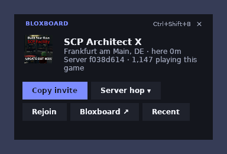

Only reads a log file
Roblox writes a plain text log to %LOCALAPPDATA%\Roblox\logs on every PC. The companion reads it, just like Fishstrap and Bloxstrap do to show your server location.
A small window next to Roblox with your server's location, an invite link, server hop and rejoin. It starts and closes together with Roblox through Fishstrap or Bloxstrap.

No. Executors like Xeno or Velocity get you banned because they inject code into the running game. The companion never touches the game at all.
Roblox writes a plain text log to %LOCALAPPDATA%\Roblox\logs on every PC. The companion reads it, just like Fishstrap and Bloxstrap do to show your server location.
It's a separate window that floats on top. It doesn't draw inside Roblox, read Roblox's memory or attach to its process.
Rejoin and server hop use the same roblox:// links as the Join buttons on roblox.com.
It only uses Roblox's public website data (game name, server list). It never reads your account or browser.
So it opens when Roblox opens and closes when Roblox closes.
Documents\Bloxboard\BloxboardCompanion.exe.Bloxboard Companion. Application location: the .exe you saved. Launch arguments: --with-roblox.Windows says "Windows protected your PC"? That's SmartScreen being careful with new apps that aren't signed by a big company. Click More info → Run anyway. You only have to do this once.
Game, server location, how long you've been there and how many people are playing.
A link that drops friends straight into your server.
Jump to the smallest server, a random one, or the busiest one that still has room.
Rejoin after a disconnect, or open the game in your browser with Bloxboard's player finder.
Every server you played in, with Rejoin and Copy invite.
Show or hide the window. Drag it anywhere; it remembers where you put it.